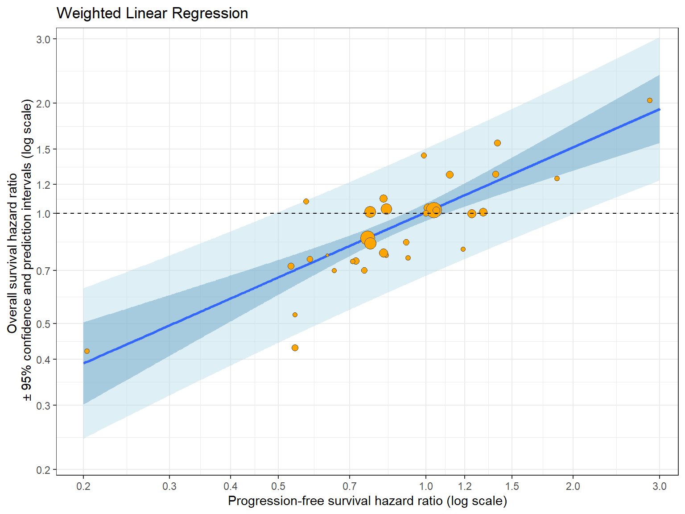

library(openxlsx)
library(wCorr)
library(DescTools)
library(gt)
library(tidyverse)
library(cmdstanr)Frequentist Weighted Linear Regression
Required Libraries
Loading Data
df1 <- read.xlsx(data.path, sheet = 1)Initial Sanity Checks
str(df1)'data.frame': 34 obs. of 10 variables:
$ Study : chr "Study 1" "Study 2" "Study 3" "Study 4" ...
$ HR.OS : num 0.741 0.756 1.277 1.01 0.43 ...
$ OS.ln.HR : num -0.3 -0.28 0.244 0.01 -0.844 ...
$ OS.se : num 0.18 0.25 0.165 0.141 0.189 0.198 0.269 0.126 0.184 0.068 ...
$ HR.PFS : num 0.72 0.92 1.12 1.31 0.54 ...
$ PFS.ln.HR: num -0.3285 -0.0834 0.1125 0.27 -0.6162 ...
$ PFS.se : num 0.177 0.255 0.168 0.134 0.17 0.186 0.264 0.126 0.137 0.06 ...
$ n1 : num 82 34 73 136 95 75 42 125 109 622 ...
$ n2 : num 73 42 74 138 86 69 39 125 110 618 ...
$ non.prop : chr "0" "0" "0" "1" ...dim(df1)[1] 34 10| Study | HR.OS | OS.ln.HR | OS.se | HR.PFS | PFS.ln.HR | PFS.se | n1 | n2 | non.prop |
|---|---|---|---|---|---|---|---|---|---|
| Study 1 | 0.7408182 | -0.3000 | 0.180 | 0.7200029 | -0.3285 | 0.177 | 82 | 73 | 0 |
| Study 2 | 0.7557837 | -0.2800 | 0.250 | 0.9199831 | -0.0834 | 0.255 | 34 | 42 | 0 |
| Study 3 | 1.2769827 | 0.2445 | 0.165 | 1.1190723 | 0.1125 | 0.168 | 73 | 74 | 0 |
| Study 4 | 1.0100502 | 0.0100 | 0.141 | 1.3099645 | 0.2700 | 0.134 | 136 | 138 | 1 |
| Study 5 | 0.4299871 | -0.8440 | 0.189 | 0.5399925 | -0.6162 | 0.170 | 95 | 86 | 1 |
| Study 6 | 0.6999825 | -0.3567 | 0.198 | 0.7499866 | -0.2877 | 0.186 | 75 | 69 | 1 |
Generating Treatment Effect on Surrogate Endpoint in New Trials
range(df1$HR.PFS)[1] 0.2034164 2.8662369# Suppose 1000 new trials reporting TE on surrogate endpoint only
new.data <- data.frame(PFS.ln.HR = log(seq(0.2,3, length=1000)))Some Derived Quantities
The weights used in this analysis were the inverse variance \(1/{\text{SE}^2}\) of the log HR of OS.
df1$weight <- 1 / (df1$OS.se)^2The weighted correlation coefficient \((\rho)\) was estimated using the Pearson weighted correlation of the target and the surrogate endpoints.
rho <- weightedCorr(df1$OS.ln.HR, df1$PFS.ln.HR,
method = "Pearson",
weights = 1 / df1$OS.se^2)
rho[1] 0.7801593Confidence intervals around Pearson \(\rho\) are not symmetrical. Therefore, a Fisher’s \(z-\)transformation was applied to estimate the \(95\%\) confidence intervals, which is conducted using the CorCI() function in the DescTools package.
effective.n <- sum(df1$weight)^2 / sum(df1$weight^2)
effective.n <- round(effective.n, 1)
effective.n[1] 13.9CorCI(rho = rho,
n = effective.n,
conf.level = 0.95, alternative = "two.sided") cor lwr.ci upr.ci
0.7801593 0.4236412 0.9273933 Model Fitting
Frequentist weighted linear regression is arguably the simplest approach to a surrogate analysis. A weighted linear regression model was used to relate the target endpoint (log HRs of OS) to the surrogate endpoint (log HRs of PFS). The data were weighted by the inverse of the variance of the log HRs of the target variable.
fit1 <- lm(OS.ln.HR ~ PFS.ln.HR, weights = weight, data = df1)
summary(fit1)
Call:
lm(formula = OS.ln.HR ~ PFS.ln.HR, data = df1, weights = weight)
Weighted Residuals:
Min 1Q Median 3Q Max
-2.58297 -0.65553 -0.07121 0.31309 1.78161
Coefficients:
Estimate Std. Error t value Pr(>|t|)
(Intercept) 0.008151 0.027147 0.300 0.766
PFS.ln.HR 0.590668 0.083728 7.055 5.33e-08 ***
---
Signif. codes: 0 '***' 0.001 '**' 0.01 '*' 0.05 '.' 0.1 ' ' 1
Residual standard error: 1.016 on 32 degrees of freedom
Multiple R-squared: 0.6086, Adjusted R-squared: 0.5964
F-statistic: 49.77 on 1 and 32 DF, p-value: 5.333e-08sqrt(summary(fit1)$r.squared)[1] 0.7801593Prediction of TE on Clinical Outcome in New Trials
Confidence Intervals
wlr.ci <- data.frame(predict(fit1, newdata = new.data, interval = "confidence"))
head(wlr.ci) fit lwr upr
1 -0.9424926 -1.200597 -0.6843883
2 -0.9342725 -1.190050 -0.6784945
3 -0.9261651 -1.179650 -0.6726807
4 -0.9181676 -1.169390 -0.6669447
5 -0.9102768 -1.159269 -0.6612845
6 -0.9024901 -1.149282 -0.6556981Prediction Intervals
wlr.pi <- data.frame(predict(fit1, newdata = new.data, interval = "prediction",
weight = 1 / (mean(df1$OS.se)^2) ))
head(wlr.pi) fit lwr upr
1 -0.9424926 -1.415157 -0.4698281
2 -0.9342725 -1.405671 -0.4628742
3 -0.9261651 -1.396323 -0.4560074
4 -0.9181676 -1.387110 -0.4492253
5 -0.9102768 -1.378028 -0.4425257
6 -0.9024901 -1.369074 -0.4359066Trial-level Association Plot
wlr.pred.df <- data.frame(HR.OS = exp(wlr.ci[,1]),
HR.PFS = exp(new.data$PFS.ln.HR),
lower.ci = exp(wlr.ci[,2]),
upper.ci = exp(wlr.ci[,3]),
lower.pi = exp(wlr.pi[,2]),
upper.pi = exp(wlr.pi[,3]))wlr.association.plot <- ggplot(df1, aes(x = HR.PFS, y = HR.OS)) +
geom_ribbon(aes(x = HR.PFS, ymin = lower.ci, ymax = upper.ci), data = wlr.pred.df, stat = 'identity', fill = "steelblue", alpha = 0.5) +
geom_ribbon(aes(x = HR.PFS, ymin = lower.pi, ymax = upper.pi), data = wlr.pred.df, stat = 'identity', fill = "lightblue", alpha = 0.4) +
scale_x_continuous(trans = "log",
limits = c(min(df1$HR.PFS)*0.9, max(df1$HR.PFS)*1.1),
breaks=c(0.1,0.2,0.3,0.4,0.5,0.7,1,1.2,1.5,2,3),
expand = c(0.01, 0.01)) +
scale_y_continuous(trans = "log",
limits=c(0.2, 3.1),
breaks=c(0.1,0.2,0.3,0.4,0.5,0.7,1,1.2,1.5,2,3),
expand = c(0.01, 0.01)) +
geom_smooth(aes(x = HR.PFS, y = HR.OS), data = wlr.pred.df, stat = 'identity') +
geom_point(aes(x = HR.PFS, y = HR.OS, size = weight),
col = "gray30", shape = 21, fill = "orange") +
geom_hline(yintercept = 1, linetype = 'dashed') +
xlab("Progression-free survival hazard ratio (log scale)")+
ylab(paste("Overall survival hazard ratio" , "\n", "\U00B1", "95% confidence and prediction intervals (log scale)")) +
ggtitle("Weighted Linear Regression") +
theme_bw() +
scale_colour_hue("trial") +
theme(legend.position = "none")wlr.association.plot
Surrogate Threshold Effect
candidate.HR.PFS <- wlr.pred.df %>%
filter(upper.pi < 1) %>%
pull(HR.PFS)
WLR.STE <- round(max(candidate.HR.PFS), digits = 3)
WLR.STE[1] 0.489